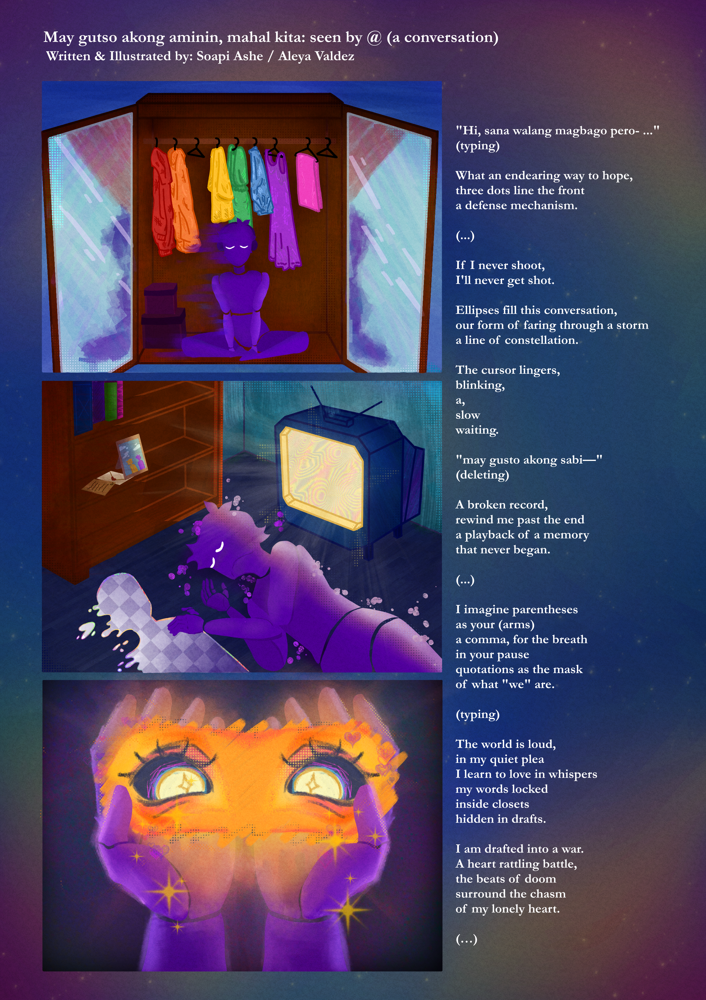
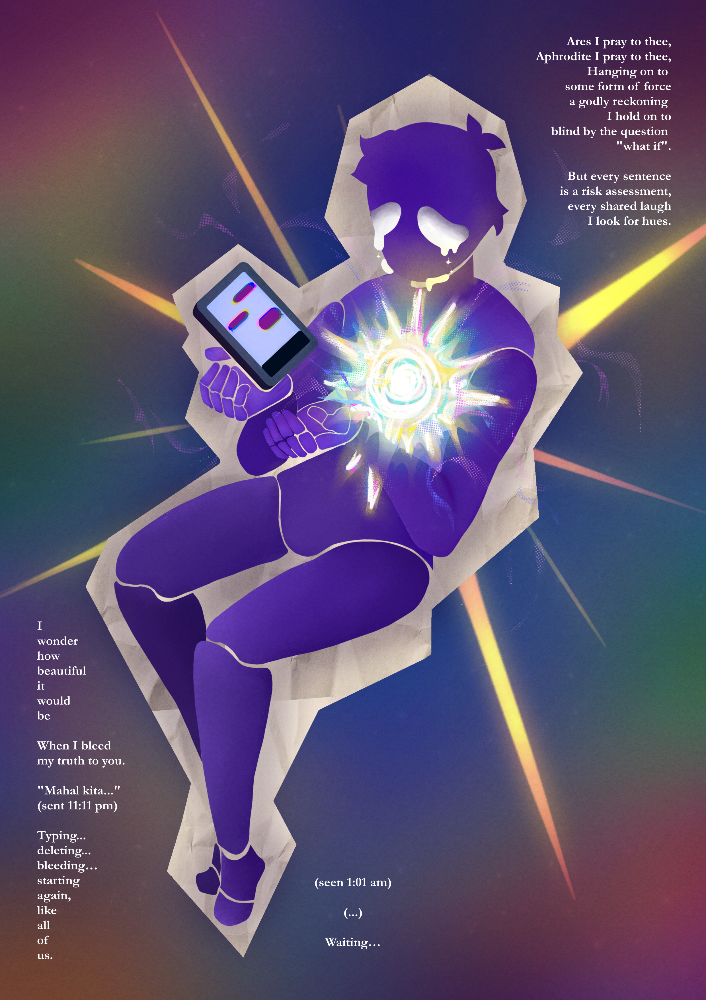
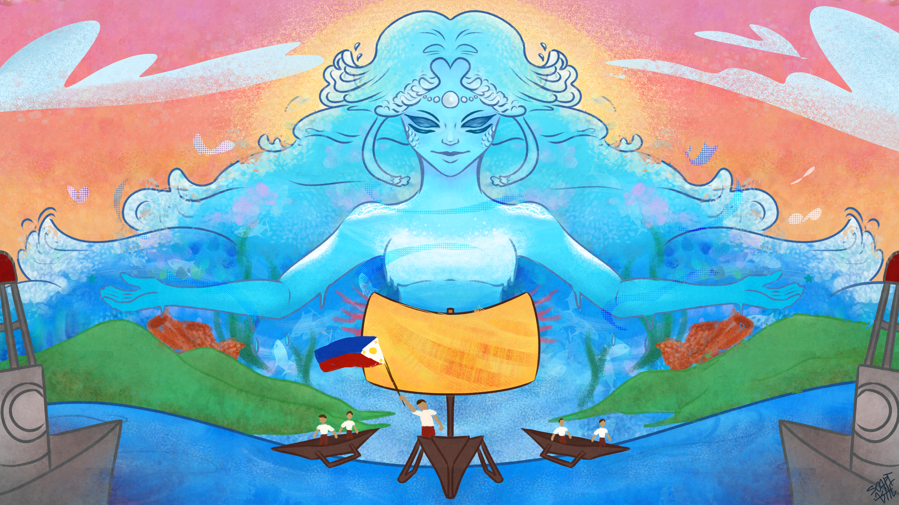
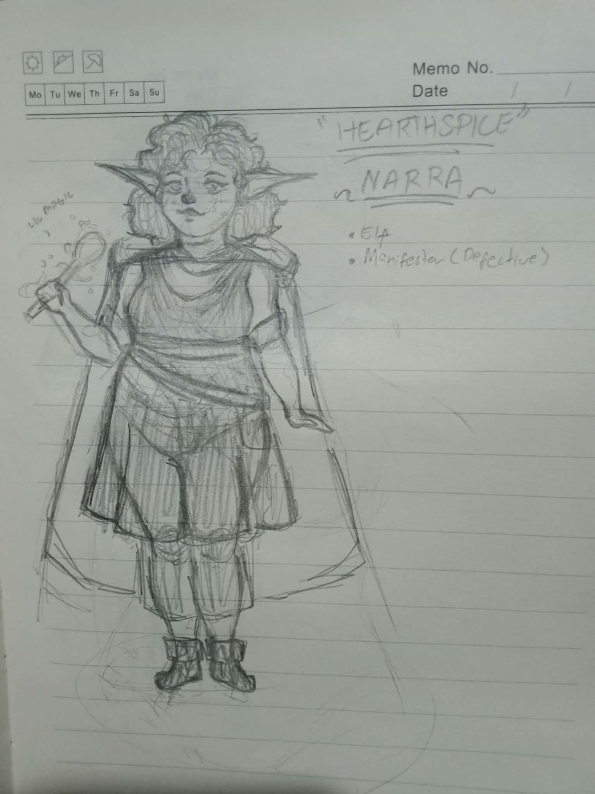

ASHE
Per Aspera Ad Astra
A little nook for the things I create
Per Aspera Ad Astra
A little nook for the things I create
I am Aleya Sophia M. Valdez, or Ashe! A sophomore student at UPOU taking a Bachelor of Arts in Multimedia Studies. Located in Santa Rosa Laguna, I am 19 years old.
My passion in life is to dedicate myself to creating and sharing stories that would inspire others to appreciate art in its many forms.
A Short Film
A short film that I directed and acted in, this was made for our subject in "Empowerment Technologies" during our grade 12th year. A romcom, out of body experience that will sure to make you engaged and laughing out loud.
A Visual Poem
The full title of this work is "May Gusto Akong Sabihin Mahal Kita". This was an entry for my org's (KultOU) zine for pride month. This visual poem focuses on the strifes and yearning through the lens of the queer experience. I created this poem and its illustrated visuals as a love letter to the community, to show how deep and profound queer love is.


An Illustration
This illustration was made for a contest run by the Presidential Office for Maritime Concerns, for their SEANING 2026 Digital Art Competition. This piece was inspired by the beauty and power of our ocean, visualing the sea as a goddess type of being.

An Illustrated Novel
This project is currently ongoing, I made this as a passion project dedicated for my love of food,art, and storytelling. I plan for this to be a hybrid type of novel, wherein some scenes will either be fully illustrated or have a comic style alongside its traditional novel writing. This story revolves around food, specifically magic within it, focusing on an elven heroine as she goes on a fantastical journey of culinary exploration, friendship, love and a bit of mid-stakes fantasy conflict.
